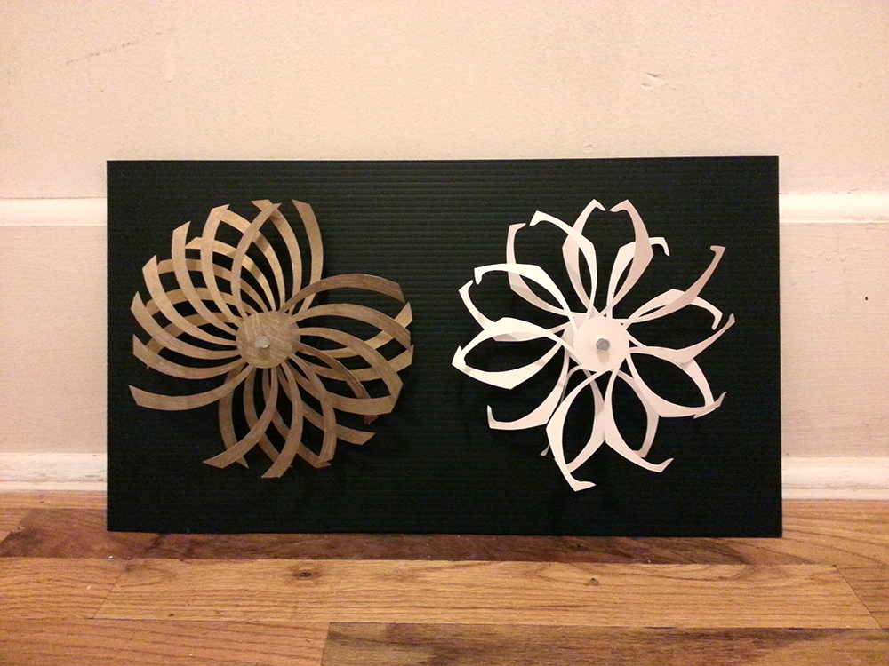
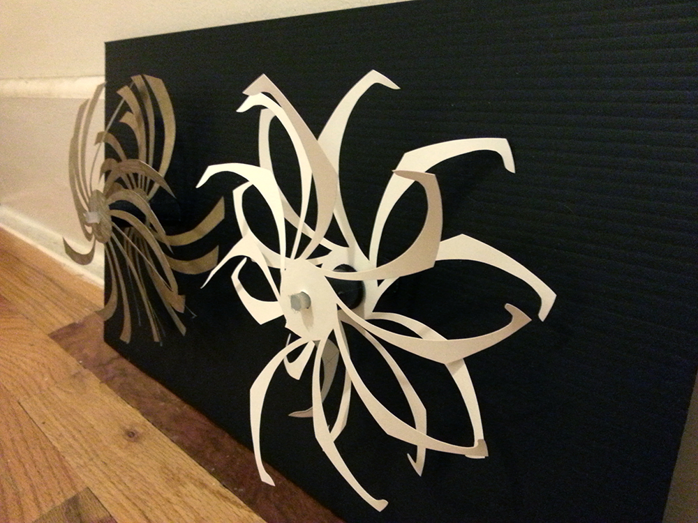
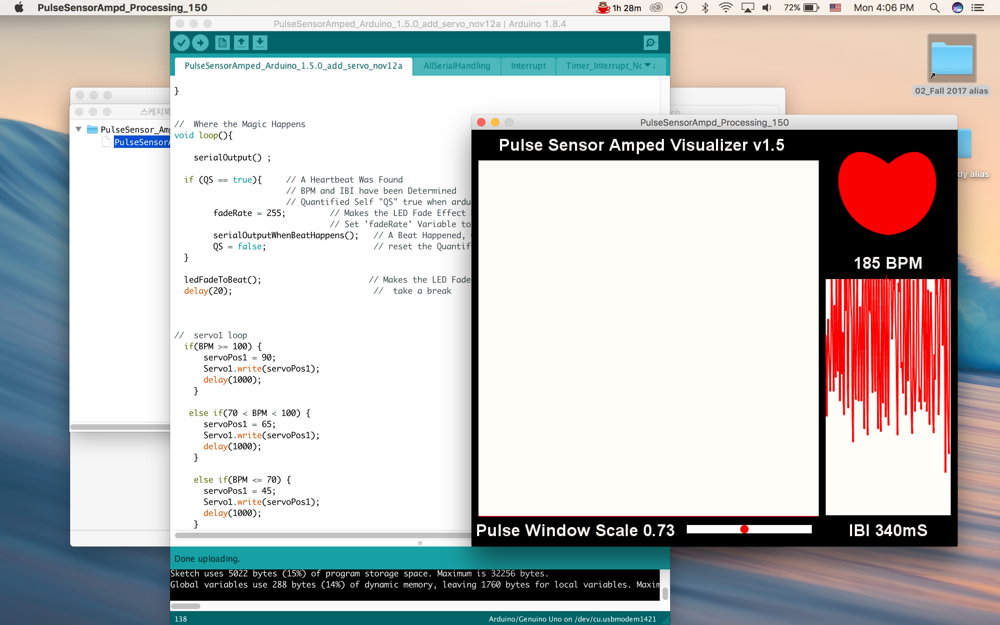
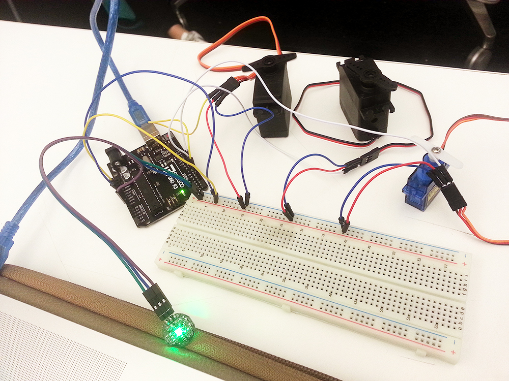
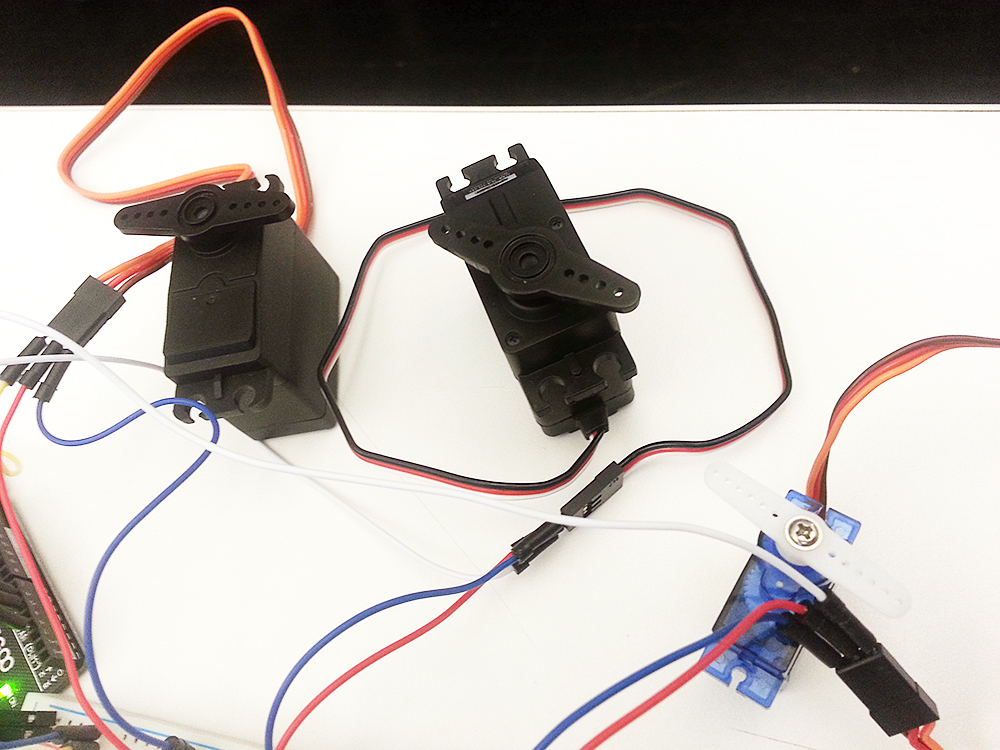

Prototype Planning
Core Considerations
- Making complex, aesthetic geometric shapes (2D? 3D?)
- How the message will be delivered by this geometric art?
- What kind of software/hardware will be effective?
- Understanding abstract concepts of cosmology
- Drawing core meanings of dream and universe + Embodying to the work
- Which form? Installation? Product? Service?
- How the interaction will be? How people make a interaction with this art?
- How to present "Singularity (Nothingness/Vacuum)?"
- How to present dreams are generated from this singularity?
- If a dream is a shape, what will be?
- How can I make these shapes movable? What technology will be helpful?
- Which software will be effective? (Maya? OpenFrameworks? 3D Printing? Physical Computing?)
Prototype Statement
I am in the early stages of designing an kinetic installation presenting mechanism of dream and universe.
Core considerations for this project are making aesthetic, and persuasive form from abstact idea / how this form make an effective interaction with audience.
Specifically, I want to find out how forms and interaction give a new insight of dream and universe to audience.
Prototype #1
Prototype #1 is composed with two movable shapes, each one is also combined two aesthetic wheels. On each 4 wheels, axles and spools are attached so that they can be rotated. When the two wheels attached on same axle rotate in opposite direction, the movement is generated, and it symbolizes the radiation of dream, "a creation from nothingness."


- What is the purpose of the prototype? What are you testing?
I made kinetic art generating motion, which symbolizes dream radiation. I wanted to find out what kind of geometric shapes are effective to convey the message and how movement reinforce the impact.
- What did you learn from making your prototype?
I learned specific geometric pattern is effective to illustrate the abstract idea, and when it rotates, it can express the physics of dreams. Also I learned that how I can make things move, generating physical energy with different features of elements.
- What did you learn from testing your prototype?
I could get the ideas how interaction will generate motion (sensors, eye-tracking, glasses, and brain wave). At the same time, I realized more consideration and exploration on the shape itself. Because testers were not aware of the hidden meaning of the shape. I need to figure out how the form will convey the abstract meaning and give a sense of dream generating to the audience.
Prototype #2
Prototype #2 is made for the technological and mechanical purpose of the project. I made a circuit using pulse sensor and several servo motors so that heartbeats influence the speed of rotation of servos. When people fall asleep, the BPM is going down than the usual. Codes are made in order to make the speed is getting faster when the pulse is getting slower because dreams are generated vigorously when people are into the deeper sleep.



- What is the purpose of the prototype? What are you testing?
This is made for technological and mechanical purpose. I wanted to test arduino can make it possible that the BPM value of pulse sensor influences the speed of servo motors.
- What did you learn from making your prototype?
I learned how complex and sensitive when elements are gathered and connected in one circuit to result I aimed for. Physical computing elements has to be considered very carefully and electrocity flow was hard to understand. But after numerous research and learning, I found out by myself which method of circuit make my goal, and also wrote the code which can make it possible that BPM influence the servo speed by myself!
- What did you learn from testing your prototype?
The mechanism actually has success to achieve the goal, but the problem was the inaccracy of pulse sensor. It did work accurately when I connected to the arduino board without any physical output. However, it showed serious inaccuracy when I connected servo motors to the circuit. I still have to figure it out what the problem is, and got some advices to use other pins and servo shield. If it does not work after these other approach, I might use other sensor or method.